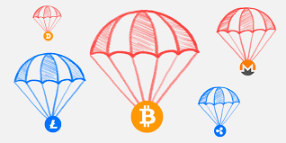
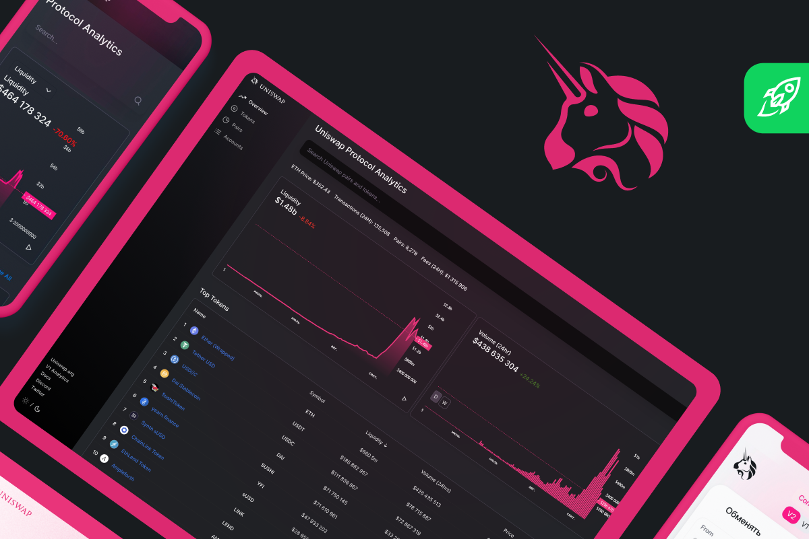
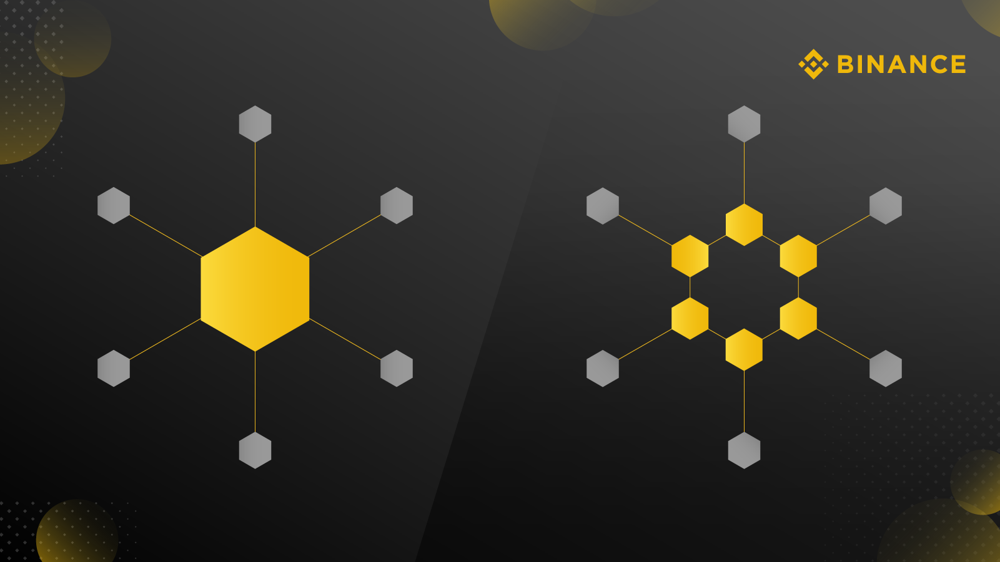

1) ЕйрДропи (AirDrops)

Перший і дуже ефективний спосіб заробітку криптовалюти без ризиків та без великих
інвестицій — Це ЕйрДроп (англ.AirDrop).
Зазвичай, це маркетингова стратегія, через яку автори тієї чи іншої криптовалюти
можуть подякувати своїм користувачам реальними грошима (криптовалютою). Для авторів
ЕйрДропу — це можливість
розповсюдження нових ключових токенів серед вже
існуючих користувачів, які стануть зацікавленими новою
безкоштовною монетою в їх портфелі.
А також, це спосіб прорекламувати та зацікавити крипто спільноту в новому проекті.
Дуже відомий кейс ЕйрДропу, що відбувся досить нещодавно, – це Uniswap Airdrop.
Там віддали кожному користувачу цієї децентралізованої біржі по 400 UNI
(приблизно 16 000$ у піку ціни токена). Досить непогано, так?)
2) Стейкінг (Staking)

Інший дуже ефективний, але затратний, спосіб заробітку нових криптовалют — це Стейкінг
(англ. Staking).
Це процес, в якому користувач блокує свою криптовалюту в своєму гаманці з метою
підтримання діяльності блокчейна на алгоритмі PoS (Proof of Stake). Іншими словами,
це просто вид майнінга, але різниця від повсякденного алгоритма PoW, де гроші даються
за рахувальну можливість системи, в тому, що тут гроші практично не залежать від
обчислювальної можливості системи, а залежать від кількості токенів, які у вас є.
Усю актуальну інформацію з нагород, які ви будете отримувати за стейкінг різних токенів,
можна подивитись тут.
3) Традиційний Майнінг (Proof of Work)
Третій спосіб заробітку — це традиційний майнінг, або PoW (Proof of Work). Це дійсно
більш складний спосіб заробітку на криптовалютах, ніж другий спосіб, бо тут вже ви
фізично повинні піти (або заказати онлайн) і купити потрібні речі для майнінгу.
Що це за речі?
Це залежить від того, що ви збираєтесь майнити. У разі ефіріуму (1.0) – це відеокарти (яких
і так вже практично ніде нема), у разі біткоїна — це ASIC’и. Також треба не забути про те,
чи буде вам вигідно займатись майнінгом з вашими цінами на електроенергію, та що робити
з теплом та шумом, які ці машини виділяють. Хоча це і складніший спосіб ніж PoS, зазвичай,
він приносить набагато більше грошей своєму користувачу.
4) Постачання Ліквідності (Providing Liquidity)
Інший, трохи більш ризиковий, але більш вигідний ніж звичайний стейкінг — це постачання ліквідності.
Ваша ціль – це постачати дві монети (50% вартості однієї та 50% вартості іншої) і заробляти
підвищенні проценти в порівнянні з звичайним стейкінгом. Але є кілька “але”, наприклад ви
втрачаєте частину монет якщо ці монети досить волатильні.
5) Faucets (Крани)
Наступний спосіб насправді доволі легкий, але він зазвичай не дуже вигідний. Це крани (англ. Faucets).
Насправді ця назва не адаптована під нашу мову, але суть її в тому, що це процес, коли користувачі
дають винагороди за те, що він пройшов якесь опитування або прочитав якусь статтю. Це допомагає розробнику
поширити свою криптовалюту і користувачу заробити з цього.
- Дуже поширив цей вид заробітку американський криптогаманець Coinbase
- Coinbase
- Який давав і досі дає винагороди за те, що користувач прочитав статтю і відповів на питання з неї.
- Досить нещодавно можна було з цього отримати близько 80$, що насправді досить непогано.
6) Централізовані Інвестиції (Centralized Investments)

Централізовані інвестиції — це спосіб заробити на крипті, яку не можна стейкати (як у 2-му пункті).
Працює це дуже схоже на те, як ви кладете долари/гривні під депозит, але замість фіату можна покласти
Біткоїн, чи, наприклад, Монеро. Зробити ці інвестиції можна на Бінансі або на BlockFi.
7) Праця в Криптосфері (Work in Crypto)
Сьомий і фінальний пункт – це просто стати розробником в сфері криптовалют. Вам не потрібно мати “великої
ідеї” криптовалюти, що привнесе революцію в індустрію, але достатньо влаштуватися в ту компанію, що вже
існує на маркеті. Але Вам будуть потрібні знання мов програмування Smart Контрактів (Solidity, наприклад).
Знання англійської також не завадить.
А якщо Ви ще не знаєте ніяких мов програмування, то можна спробувати влаштуватися, наприклад, у команду
сапортів Бінанса та почати розвивати себе там. Можливостей купа, але потрібна Ваша мотивація!